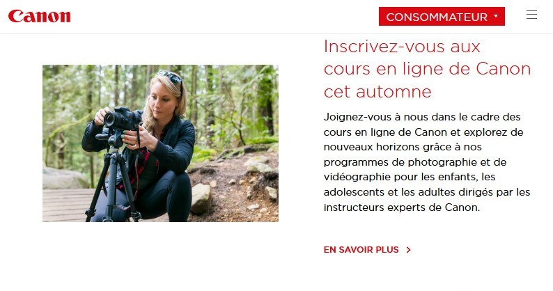
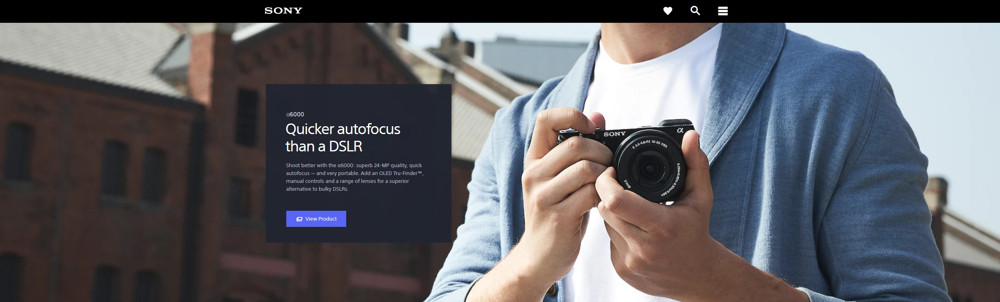
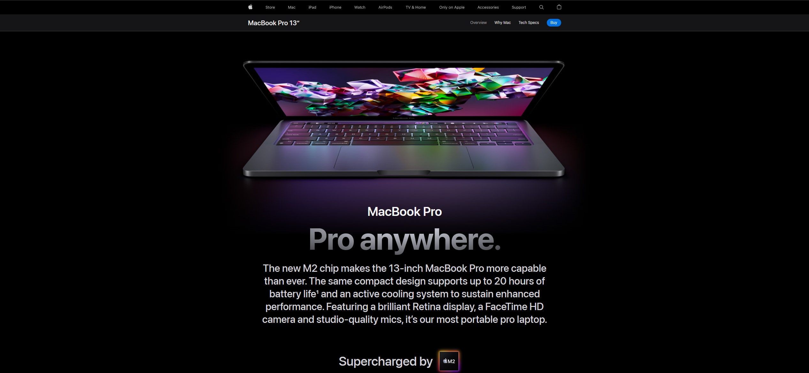
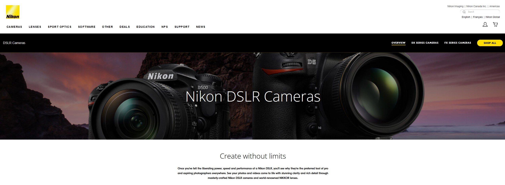
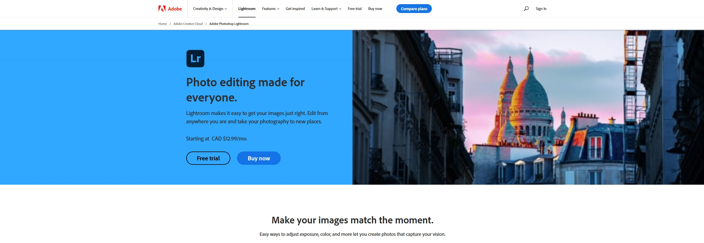

Les reflex numériques d'entrée de gamme de Canon constituent un excellent point de départ pour passer à un objectif interchangeable. Des fonctions intuitives pour un meilleur contrôle créatif de vos images.
Visiter le site
VisiterSony Alpha est une gamme de reflex numériques et hybrides lancée en 2006. Héritière des technologies Konica Minolta, elle propose des capteurs plein format parmi les plus performants du marché.
Visiter le site
VisiterToute la gamme Apple convient aux photographes : MacBook Air comme seconde machine, MacBook Pro ou iMac en station principale. Des outils puissants pour le traitement et la gestion de vos photos.
Visiter le site
VisiterFabricant japonais de référence en optique et imagerie. La gamme Nikon couvre les reflex, hybrides, jumelles, microscopes et instruments de mesure industriels — une expertise optique au service des photographes.
Visiter le site
VisiterLightroom Classic est LA référence en post-production photo. Importation, retouche, gestion des couleurs, recadrage, réduction du bruit — il remplace Photoshop pour 80 % des besoins courants des photographes.
Visiter le site
Visiter